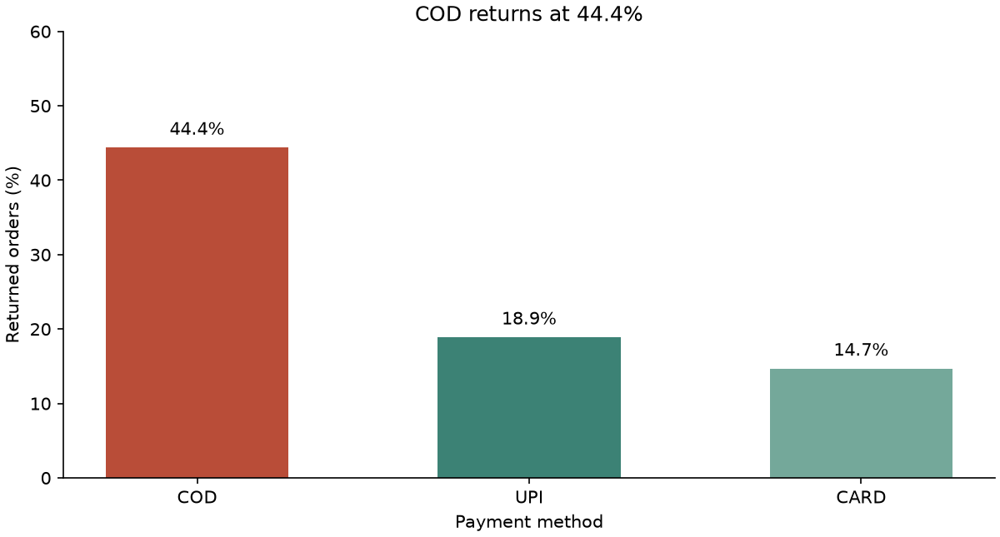
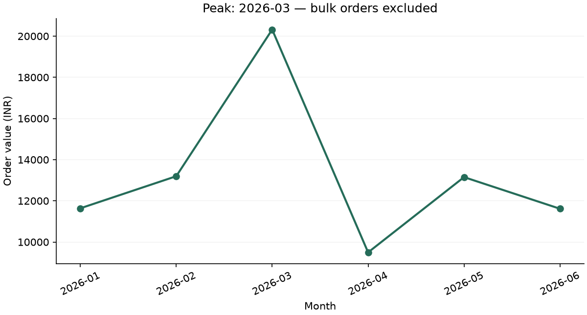

Verified results from the supplied order data. Figures represent discounted order value, not profit or refunds.
Revenue reconciliation
Raw order value₹99,860.20180 original ordersDuplicate adjustment−₹2,501.90Five repeat submissionsCleaned order value₹97,358.30175 unique orders
The five removed records account for the full difference. Missing discounts were treated as zero and missing ratings filled with the median; neither changed order value.
Where returns concentrate
COD orders had a 44.4% return rate. The highest-risk group was COD in Tier-2 cities at 54.5%. These are observed associations, not proof that a payment method causes returns.
Return rate by payment method
Method
Orders
Returned
COD
54
44.4%
UPI
53
18.9%
CARD
68
14.7%

View payment and city-tier segments
Payment
Tier
Orders
Return rate
COD
2
22
54.5%
COD
1
32
37.5%
CARD
2
23
26.1%
UPI
1
31
19.4%
UPI
2
22
18.2%
CARD
1
45
8.9%
Revenue trend after flagging bulk orders
Two unusually large January orders create an apparent January peak. Excluding those orders for the trend comparison only makes March the highest month at ₹20,318.90. The cleaned total above still includes those orders.

Monthly order value in INR
Month
Including bulk
Excluding bulk
2026-01
₹29,582.10
₹11,637.10
2026-02
₹13,195.50
₹13,195.50
2026-03
₹20,318.90
₹20,318.90
2026-04
₹9,495.30
₹9,495.30
2026-05
₹13,151.10
₹13,151.10
2026-06
₹11,615.40
₹11,615.40
Business narrative
Generated via offline using validated findings.
Situation
The cleaned order value is INR 97,358.30 from the deduplicated orders. Raw order value was INR 99,860.20.
Complication
COD has a 44.4% return rate; COD orders in Tier-2 cities have a 54.5% rate. Five duplicate records inflated the raw order value by INR 2,501.90. The apparent January peak of INR 29,582.10 falls to INR 11,637.10 when two unusually large orders are excluded for trend analysis.
Resolution
Review return causes in COD Tier-2 orders and prevent duplicate submissions. Use March at INR 20,318.90 as the peak month for the comparison excluding bulk orders. Investigate causes before changing payment or fulfilment policies.
Raw SQL reports
These results come from the unchanged CSVs loaded into SQLite. They intentionally include the five duplicate records.